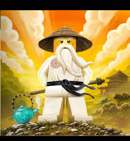

Abilities
- Wisdom
- Fierce with a bo staff
- Creation (if the plot allows)
- Spinjitzu
- Tea making
Weaknesses
- Old age
- Becoming a baby at one point
Biography
Wu Garmadon is one of the two sons of the first spinjitzu master, the creator of ninjago. He and his brother, Garmadon were tasked at their father's death to watch over the golden weapons of spinjitzu and keep them from the wrong hands. However, in Garmadon's youth, he was bitten by an evil snake and was cursed to be evil. When they grew older, Garmadon sought to posses the golden weapons and remake ninjago in his own image. The two brothers clashed but Wu, the younger, struck down Garmadon into the underworld. Wu realized that he needed four gardians to protect the weapons should Garmadon return. So he hid the golden weapons and recruited four ninja to seek them out and protect them from Lord Garmadon.